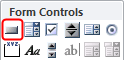
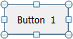
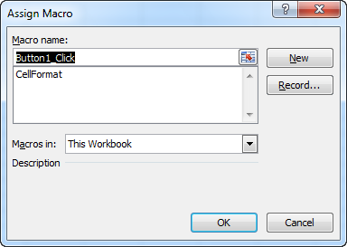
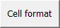

To perform this task it is necessary that the macro CellFormat was created.
A very convenient way to run a macro is by placing a command button on the
worksheet.
Choose Developer tab > Insert (group Controls).
Figure: Form Controls

Click on Button (Form Control)
The cursor will change to a +. With this cursor you can
draw a rectangle in the worksheet for the button.
Click the left mouse button and draw a rectangle with the desired dimensions for the button
somewhere in the worksheet. Then release the left mouse button.
The drawn rectangle will turn into a button with a text like Button
1.Figure: Design button

Furthermore you will see the dialog box Assign Macro.Figure: Assign macro CellFormat

Select the macro CellFormat and click
OK.
Select the text on the button and change it to a more appropriate text, for example
Cell format.
Deselect the button by clicking anywhere in the worksheet.
Figure: Button Cell format

Test the macro on a cell with text via the command button.